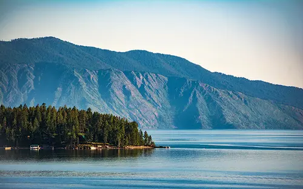

Idaho Towns Page Information

All About Idaho
Many people don’t know much about Idaho except “famous potatoes.” But, since you are here, you would probably like to know more. Adjacent to Washington and Oregon in the Pacific Northwest, Idaho is a big state. It’s been said if you flatten all the mountains in Idaho, the state would be the size of Texas. Idaho covers two time zones, runs from Canada to Nevada, and encompasses the western side of the continental divide of the Rocky Mountains. Rivers, mountains and farmland dominate the state’s landscape. The panhandle has emerald green hillsides, timbered mountains and pristine lakes. Central Idaho is covered with jagged peaks. The Snake River Plain, with its wide open vistas, irrigated farm lands and vibrant cities forms the character of Southern Idaho.
Idaho’s history lies with its native tribes, the Lewis and Clark Expedition and determined pioneers on the Oregon Trail. Today’s Idaho is both cosmopolitan and small-town friendly. Boise, the capital and largest city, developed near Fort Boise along the Oregon Trail has grown to a population of 190,000. Agriculture, manufacturing and tourism are Idaho’s major industries. Abundant outdoor recreation opportunities and scenic vistas around every turn attract over 20 million tourists annually.
Article from visitidaho.org